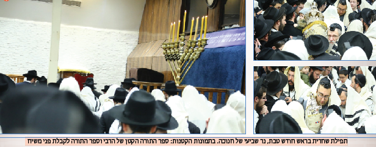

קבלת שבת
יומן מ’בית חיינו בית משיח’ - שבוע פרשת ויגש - ה’תשע”ט
יומן מ’בית חיינו בית משיח’ - שבוע פרשת ויגש - ה’תשע”ט

בקונטרס ה’ טבת מובא המאמר ‘ודוד עבדי נשיא להם לעולם’ שנאמר בשבת פרשת ויגש ה’תשל”ב, ויצא לאור מוגה על ידי כ”ק אד”ש מה”מ בתשנ”ב. שם מסביר הרבי בארוכה, על העבודה שפעל יהודה אצל יוסף על ידי ‘ויגש אליו יהודה ויאמר בי אדוני’. אשר ההשפעה מיוסף ליהודה צריכה להיות בשביל שבמלכות יומשך השפע, ולא בשביל המעלות שיתווספו על ידי השפעה זו בספירת היסוד. אפילו יהא זה הגילוי הנעלה של התגלות ‘עצם הכתר’ שלמעלה מהתגלות ה’בלי גבול דכתר’ (עד כאן בקיצור ואין כאן מקום להאריך, בזאת מוגשת ההמלצה לעיין במאמר עצמו, דברי אלוקים חיים).
ובעברית פשוטה, יש לעשות את העבודה המוטלת והנדרשת, לא בשביל טובת עצמו, יהיו גילויים אלו גבוהים ככל שיהיו, אלא כי כך צריך לעשות. ובלשון הרב: “היינו שהלימוד וההפצה צריכה להיות לא בשביל העילוי שנעשה עי”ז בהמלמד והמפיץ (מתלמידי יותר מכולם), אלא בשביל המקבלים”.
ובענייננו, כשנמצאים בסמיכות לנשיא הדור, ניתן להרגיש ולהחדיר במוחש, שכל עבודת ה’ לאורך כל היממה, ולאורך כל השנה כולה, בלימוד הנגלה והחסידות, בעבודה פנימית ובהפצת המעיינות, הינה עבור מטרה אחת בלבד: התגלותו המושלמת של הוד כ”ק אדוננו מורנו ורבינו מלך המשיח שליט”א.
“ועי”ז מקרבים וממהרים עוד יותר את קיום היעוד ועבדי דוד מלך עליהם גו’ ודוד עבדי נשיא להם לעולם, בביאת משיח צדקינו בקרוב ממש”. אמן.
מענדי
יום ראשון - א’, ב’ דר”ח טבת,
נר שמיני דחנוכה
לקריאת התורה הוצאו מן ארון הקודש שני ספרי תורה, האחד, ספר תורה לקבלת פני משיח צדקינו בו יקראו את פרשת ראש חודש, השני, ספר התורה של כ”ק אד”ש מה”מ בו יקראו את הפרשה לחנוכה.
בתום התפילה הארוכה, מתקיימת התוועדות בר מצווה לת’ מרדכי אליה שי’ דרמון מארץ הקודש בשולחן המזרחי שמשמאל לארון הקודש, בהשתתפות קהל רב מתלמידי התמימים.
ההכנות לקראת ההדלקה האחרונה בבית חיינו נכנסות להילוך גבוה עם התקרב שעת המנחה. שבעת הנרות הדולקים מאמש, מוחלפים על ידי וועד המסדר בשמונה חדשים, וכמידי יום, בימת הקריאה הגדולה מוצאת אל מסדרון הכניסה, על מנת לאפשר לכמה שיותר קהל להצטופף אל תוך הזאל. בתפילת המנחה כבר מלא בית הכנסת בקהל עצום, אלפי אנ”ש תושבי השכונה ותלמידי התמימים והאורחים, כשאיתם חיילי צבאות ה’ גודשים את הזאל הגדול מפה אל פה. בסיום התפילה עולה החזן ר’ שמעון שי’ הערץ על הבימה המיוחדת, ומברך את הברכות בקול רם כשאחריו עונה הקהל ‘אמן’ אדיר, הס הושלך בבית הכנסת עת השמש עובר מנר לנר עד תום הדלקת כל שמונה הנרות, שקט שמופר בבת אחת בשירת ‘הנרות הללו’ סוחפת. כשנפנה הקהל לדרכו, ניגשים רבים יחד עם בני משפחותיהם להצטלם עם המנורה המפוארת למזכרת.
שיירת הטנקים של תלמידי התמימים יוצאת הלילה בשנית מבית חיינו, הפעם לעבר הרובע המרכזי של העיר ניו יורק, האי מנהטן.
גם הלילה כבכל ימי החג, מתקיימות התוועדויות רבות בבית חיינו כהוראת כ”ק אד”ש מה”מ להתוועד בכל לילה מימי החנוכה.
יום שני - ב’ טבת
זהו היום האחרון בשמונת הימים החולפים בהם תפילת שחרית מלווה בפרקי החג. בקריאת התורה עלו כרגיל מספר נערי בר מצווה, ובסיום התפילה ערכו התוועדויות שמחה וחזרת דא”ח כנהוג.
עם תום ימי ההדלקה, שבים זמני התפילות לשגרתם הרגילה, מנחה בשעה 3:15, ומעריב בשעה 6:45.
התוועדות יום הולדת לת’ דוידי שי’ הינדי בקדמת בית הכנסת, תחת צילה של מנורת החנוכה, מתקיימת בהמשך לפארבריינגען ‘זאת חנוכה’, החותם את שמונת הימים הגדושים והסוערים מלאי החיות והעיסוק בלהט במבצעי קודשו של הרבי, כפי שהם חדורים בשליחות היחידה שעוד נותרה - להכין את העולם לקבלת פני משיח צדקינו. התמימים יושבים ודנים ביניהם על הדרכים להעביר הלאה את האור והגילויים למשך כל השנה כולה. כמו כן, מתקיימת במערב הזאל התוועדות בהשתתפות ר’ שלום מרדכי שי’ רובשקין, לציון מלאות שנה לשחרורו הניסי מבית הסוהר.
קרוב לחצות, התפשטה כאש בשדה קוצים השמועה על זיכויו במשפט ההגירה של הת’ אהרלה שי’ קעניג, מחברי הנהלת מערכת ‘יפוצו מעיינותיך חוצה’ בארצות הברית, ומנהל האגף ליריד ספרי החסידות המתקיים במספר מועדים בשנה בשכונותיה החרדיות של ניו יורק, כמו כן היה היוזם ומארגנה בפועל של השיירה ההיסטורית לעיר הבירה וושינגטון די סי בחנוכה האחרון. חיש קל נאספו תלמידי התמימים מרחבי השכונה אל בית חיינו, לחגוג עימו את הבשורות הטובות. לאחר ריקודי ‘דידן נצח’ סוערים במרכז הזאל, מתקבצים כולם אל הפינה הצפונית מזרחית שם נערכת ההתוועדות הקבועה דימי שני, לחיזוק האמונה וההתקשרות בכ”ק אד”ש מה”מ, שהיום מתקיימת בסימן סעודת ההודיה על הניסים. לצד פארבייסן בשפע, מתוועדים הרה”ח ר’ יהודה שי’ פרידמן מנהל בית חב”ד בשכונת מיל בייסין, והרה”ח ר’ עמוס שי’ כהן, יחד עם אהרל’ה המגולל במשך שעה ארוכה את השתלשלות המאורעות וריבוי המופתים שזכה לראות בתקופה האחרונה, כדברי כ”ק אד”ש מה”מ על פרסום הניסים “ה”ז נוגע גם לביאת משיח צדקינו בגאולה האמיתית והשלימה”.
יום שלישי - ג’ טבת
התוועדות יארצייט נערכת בסיום התפילה על ידי הרה”ח ר’ שמואל שי’ סמיואלס, שאף ניגש לפני העמוד בתפילת שחרית.
מכולות גדולות שעשו את מסעם מארץ הקודש הנה דרך הים, פורקות במורד רחוב קינגסטון משטחי ענק עמוסים בעשרות אלפי ספרים, עבור ירידי המכירות המרכזיים שיתקיימו בבית חיינו ובשכונותיה היהודיות של ניו יורק, לכבוד חג ה’ טבת שיחול בעוד יומיים. בשל הניצחון המפורסם במשפט הספרים נהוג לרכוש ספרים רבים בקשר עם יום מיוחד זה, בנוסף, קניית הספרים בהוספה על המצויים כבר ב’בית מלא ספרים’ של כל אחד, מזרזת את פדייתם של ספרי רבותינו נשיאנו כפי דברי כ”ק אד”ש מה”מ בדבר מלכות.
כמו כן מעורר הרבי על דבר עשיית מנויים עבור ספרים שעוד טרם יצאו לאור, ורבים בוחרים לממש הוראה זו בהצטרפות למבצע המנויים ההיסטורי לסדרת ‘דברי משיח’, הסדרה המתעתדת להקיף את כל תורת הרבי הבלתי מוגהת מתחילת שנות הנשיאות, ומכילה אף את פרוייקט היומן, המרכז תחת קורת גג אחת את כל יומני בית חיינו לאורך השנים, ובנוסף את כל הר”ד מחלוקות הדולרים. סדרה זו בהוצאת המכון להפצת תורתו של משיח, אחראית לחשיפות רבות בפרסום ראשון, של ‘הנחות’, יומנים ותמלילים רבים שטרם ראו את אור הדפוס ומופיעים לראשונה בספרים אלו.
יום רביעי - ד’ טבת
בתפילת המנחה כבר מורגשת באוויר אווירת החג הממשמש ובא - יום ה’ טבת, ב’שים שלום’ פותח החזן בניגון ‘דידן נצח’ לקול שירת הקהל. הניגון שילווה במעת לעת הקרובים את הקהל בבית חיינו בהכנה לתפילות, ובכלל ינוגן בכל עת מצוא - בריקודי השמחה, ובהתוועדויות.
כבר משעות הצהריים המוקדמות, החלו מוקמים בחצרות בית חיינו דוכנים רבים לממכר ספרים, על פי הוראת כ”ק אד”ש מה”מ “ע”י שיביא לביתו ולספרייתו וכיו”ב, ספרי (וכתבי) קודש חדשים בדברי תורה”. תחת עזרת הנשים מוקמים מתחמים של מרכז ‘חי”ש הפצת המעיינות’. לצידם דוכני ה’וועד להפצת שיחות’, שם נמכרים כל ספרי תורתו המוגהת של כ”ק אד”ש מה”מ, לצד שאר ספרי ה’וועד’. בנוסף, עמדות מיוחדות למכירת ספרי בית ההוצאה לאור המפורסם ‘ממ”ש’, ומכירת ספרי הרב מיכאל חנוך גאלאמב, משפיע בישיבת תות”ל המרכזית.
על שדרת קינגסטון מקים ארגון ‘יפוצו מעיינותיך חוצה’ דוכנים לממכר תורת חב”ד עבור הקהל הגדול מאחינו בית ישראל הפוקד את בית חיינו בימים אלו, בעיקר ספרי חסידות וגאולה ומשיח המתורגמים לשפת המדינה.
הכנות קדחתניות ניכרות בסידור הזאל הגדול ובמטבח בית הכנסת, לקראת התוועדות ה’ טבת המרכזית הלילה, הנערכת מטעם גבאי בית הכנסת.
מפאת קוצר היריעה וגודל המעמד, מובאת סקירה מההתוועדות הגדולה בידיעה נפרדת, קראו וחיו את הרגעים.
בסיום ההתוועדות המרכזית, עת השעון מורה על שעות הלילה המאוחרות, או שמא על שעות הבוקר המוקדמות, מתיישבים תלמידי התמימים בני קבוצה ע”ט להתוועדות רעים לרגל יום הולדתו של הת’ שניאור שי’ ידגר לאורך ימים ושנים טובות.
יום חמישי - ה’ טבת, ‘דידן נצח’!
יום “השחרור וה”פדיון שבויים” של הספרים והכתבים של רבותינו נשיאנו שבספריית אגודת חסידי חב”ד ליובאוויטש”. בחזרת הש”ץ דשחרית, פותח החזן בניגון ‘דידן נצח’ (הארוך). כיאה ליום הבהיר זה, מוציאים מן ההיכל לקריאת התורה את ספר התורה לקבלת פני משיח צדקינו, מספר נערי בר מצווה שיום הולדתם חל בימים אלו, זוכים לעלות לתורה ביום גדול זה ובספר מיוחד זה.
דוכני הספרים הפועלים החל מאמש במכירה רצופה של ספרי חב”ד מכל הסוגים, ממשיכים את גל המכירות לאורך כל היום ואף אל תוך הלילה, עת מתקבצים רבים להתוועדויות ליל שישי בבית חיינו..
בהמשך הלילה מתקיימים ריקודים סוערים בקידמת בית חיינו לרגל החג, ולאחר כשעה מתיישבים הבחורים להתוועדות ה’ טבת המרכזית לתלמידי התמימים, עם המשפיע הרה”ח ר’ ישראל שי’ גרינברג.
יום שישי - ו’ טבת
לאור הידיעות הכאובות מארץ הקודש, בדבר קיומם של פיגועים על ידי מרצחים ימ”ש שגבו את חייהם של מספר יהודים הי”ד, הוחלט לקיים הבוקר סדר ‘השכם’ מיוחד שלא מן המניין, על מנת להוסיף ברוחניות ולהעביר את רוע הגזירה.
כמידי יום שישי יוצאים אנ”ש והתמימים למבצע תפילין בכל רחבי העיר וגלילותיה, להכין את העולם לקבלת פני משיח צדקינו, מתוך התוקף ד’ויגש יהודה אל יוסף’, מבלי התחשבות בגדרי העולם כלל, כ’רצון מרדכי’ וכפי שמבואר בדבר מלכות.
קבלת שבת
עוד לא תמה אווירת ימי החנוכה בחצרות קודשינו, וכבר התרגשו על בית חיינו אירועי ה’חמישי בטבת’. הדי הריקודים וההתוועדויות, כמו גם המבצעים ביום החולף, לא שככו. לקראת השעה 4:55 - אחד מזמני קבלת שבת המוקדמים בשנה, כבר ניצב לפני התיבה החזן ר’ מענדל שי’ רייצעס, לתפילה חגיגית במיוחד.
השולחן הרחב הניצב בכניסה אל חלל הזאל הגדול, משמש כבימת כבוד עבור כל מכון, וועד או מערכת כלשהי, המוציאים לאור מידי שבוע לקראת שבת עלונים, חוברות וקונטרסים, לשמחת קהל אנ”ש והתמימים. מבין שלל הקבצים בולטת השבוע החוברת ‘דידן נצח’, השניה לשנה זו מתוך סדרת החוברות בעלת השם מבית וועד חיילי בית דוד. החוברת המפוארת מכילה חלק משיחת כ”ק אד”ש מה”מ ביום הניצחון דה’ טבת ה’תשמ”ז, בה לומד הרבי הוראה בעבודת ה’ מן טענות הצד שכנגד, וכן שלל יומנים מאירועי החג בשנים תשמ”ז - אירועי החגיגות, תשמ”ח - ‘לשנה הבאה קבעום ועשאום”, ותשנ”ב - כקביעות שנה זו.
שבת קודש - ז’ טבת
במרכז סדרי חסידות בבוקר השבת, מידי שבוע בשבוע, מתקיים השיעור השבועי לתלמידי התמימים בדבר מלכות לעיון. עם הגיע העת ניגש אל עמוד התפילה ר’ שמואל נחמיה שי’ שפילמאן לתפילת פסוקי דזמרה, אותו מחליף ר’ עזרא שי’ העכט לקראת ‘שוכן עד’. בקריאת התורה עולים מספר חתנים לקראת יום נישואיהם בשבוע הקרוב.
הבעל מוסף דשבת זו, הוא החזן ר’ לוי יצחק שי’ גאייער. לאורך תפילות השבת, מתקבצים כל ילדי צבאות ה’ על מקום מיוחד בקידמת בימת ההתוועדויות, שם מוצבים מספר ספסלים שמורים, ויחד עם מדריכיהם מתפללים את התפילה בחיות ובעניית אמן בקול. בסיום התפילה, עולים כולם אל עזרת הנשים האחורית הפתוחה לרחוב יוניון, למסיבות שבת ואמירת שנים עשר הפסוקים.
לקראת השעה 1:30 כבר ממלא קהל רחב את חלקו המרכזי של הזאל הגדול, והכל ממתינים בחרדת קודש להתוועדות דכ”ק אד”ש מה”מ. מספר תמימים נמרצים מחלקים את ההנחה משיחת שבת פרשת ויגש ה’תשנ”ב. בשיחה זו מדבר כ”ק אד”ש מה”מ אודות הנהגת בני ישראל בתוקף כ’ויגש יהודה’, להתנהג כרצון מרדכי אשר לא יכרע ולא ישתחווה להגבלות העולם, ובין היתר בביטויים מיוחדים כגון “שזהו עיקר עניין ה’יהדות’!”, “וכאשר רק יפתחו את העיניים יראו מיד איך שכל העולם כולו מוכן, ועד כדי כך, שהעולם עצמו דורש ותובע מכל יהודי שיתעלה למעמד ומצב דגאולה בשלימות ובגלוי!”. בנוסף מעורר אודות קניית ספרים כדרך לפדייתם של ספרי רבותינו נשיאנו הנמצאים לעת עתה בשביה, וההחלטה בזה עוד ביום השבת.
בקריאת התורה דמנחה עולים שני נערי בר מצווה מאה”ק שזכו לחוג את יום היכנסם לגיל מצוות וגמר כניסת הנפש האלוקית, בד’ אמות דכ”ק אד”ש מה”מ.
סדר הניגונים המרכזי בבית חיינו, משמש - כמו רבים מהקורות בחצרות קודשינו, למגדלור ולמופת עבור ישיבות תומכי תמימים וקהילות אנ”ש ברחבי העולם כולו. בתום התפילה מתיישבים רבים מזקני החסידים סביב השולחן המרכזי שבמערב בית הכנסת, במרכזו יושב הרה”ח ר’ מנחם מענדל שי’ רייצעס, לצידו האברך שנבחר לחזור דא”ח באותו השבוע, וסביב סביב, קהל גדול של תמימים ואברכים, חלקם ישובים על הספסלים, חלקם עומדים, וחלקם אפילו על בימת ההתוועדויות. מחזה הציבור הגדול השר ניגונים עתיקים אלו, המעוררים את רגשי הלב לעבודת ה’ - מושך סביבו קהל רב.
בשל מזג האוויר החורפי והמעונן השורר באזור, לא ניתן לראות את הירח, ומעמד קידוש לבנה שהיה צריך להתקיים במוצאי שבת זה, נדחה למועד מאוחר יותר.
במהלך סדר נגלה דמוצאי שבת (המתקיים בזמן החורף), נערך באישור ראש הישיבה הרה”ח ר’ שניאור זלמן שי’ לאבקאווסקי, שיעור בדבר מלכות השבועי של הפרשה הנכנסת לצד סעודת מלווה מלכה, על מנת להתחיל את השבוע חדורים בהוראות האחרונות אותם זכינו לשמוע מנשיא הדור. בהמשך הלילה באותו השולחן, נערכת חגיגת סיום הרמב”ם מפוארת, לרגל סיום ספר קדושה עם השלמת הלכות אישות, ותחילת הלימוד בספר הפלאה בהלכות שבועות.
יחי אדוננו מורנו ורבינו מלך המשיח לעולם ועד!